【赋墨沉湘·八】寒冬，湖湘，行者。
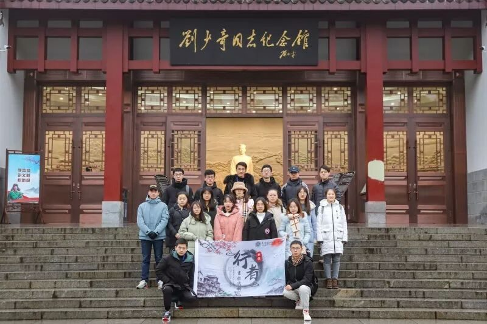

这是跟随团队做的第二次文化调研，原因很简单。第一是因为责任，如果说参加第一次是在我这片白纸上写下了些什么，那么第二次就是我尽量在行者无疆这幅画卷上画上几笔；第二是继续让行者无疆作为文化归宿以及承载关乎文化的点滴想法。
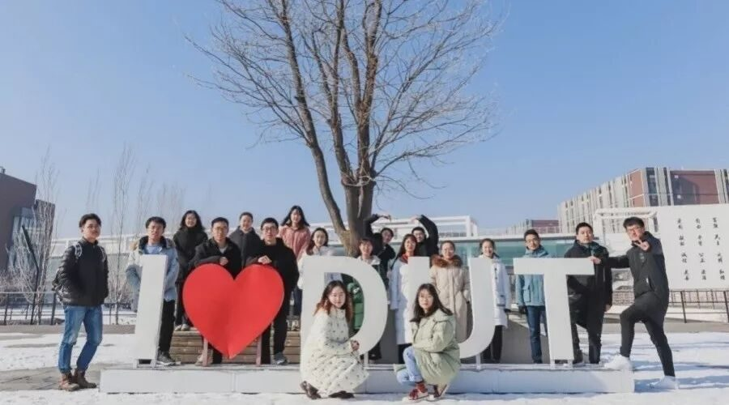
这儿有一群人一同怀着对文化的无限憧憬、想法和情愫，行走在城市街头，想与文化撞个满怀。
长沙，不虚此行
半年前的重庆之旅，仍然记忆犹新，这次长沙之行更是历历在目。
我们不求在繁华的街市欣赏长沙风光，只想探寻那一抹湖湘文化的魅力，感受长沙独特风韵。
可不曾想湖湘文化源远流长，上可追溯到炎黄帝时期，后来书院的兴盛，岳麓书院作为四大书院之一，培养了一批又一批优秀的仁人志士，在近现代再次涌现了一大批湖湘名人伟人。形容湖南人最多的就是“吃的苦霸得蛮”，也正是他们这种骨子里的精神特质让他们敢为人先，在时代需要的情况下能够站出来。
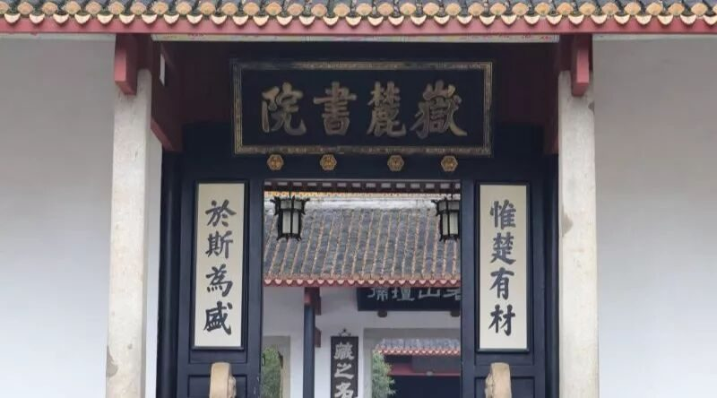
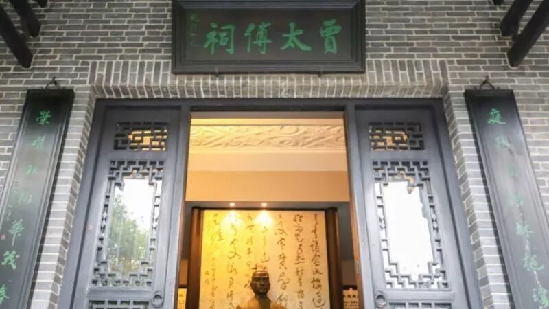
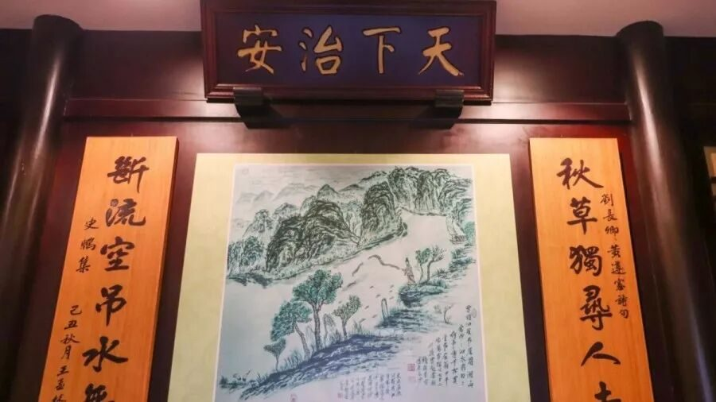
湘绣，铜官窑，简牍，剪纸，无论是物质还是非物质文化遗产，在这个网络信息横流的时代，总能发出别样的声音。湘绣剪纸集绘画等多种艺术于一身，造就了五彩斑斓和纯色之美，而它们背后所蕴藏的执着坚持更是湖湘文化引以为豪的。
新生代绣娘怀揣着对湘绣的热忱，秦老耄耋之年仍然致力于发扬剪纸艺术，他们是这个时代给予的瑰宝，正是这样一些人的坚持和务实，让中华传统文化绵延千年。
“去一个城市我一定会去博物馆看一看”，我们来到了湖南省博物馆，也是不虚此行，给我们长沙之行画上了圆满的句号。在这里汇聚了湖湘文化的起源、发祥、壮大和传承，回想过去四天走过的路途和看到沿途的文化以及激起的内心想法，都呈现在眼前和环绕在耳边，它们也在省博在长沙在整个社会熠熠生辉。
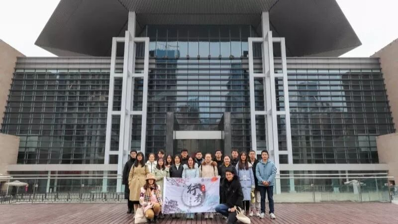
同一个团队同一片初心，不同的人员相同的地点。虽然我们来自五湖四海，但是我们都在坚守着文化传承和发扬的初心，我们不求在所调研的文化的长河中添上浓墨重彩的一笔，只望在人们心中泛起一层对于文化的关注的涟漪。
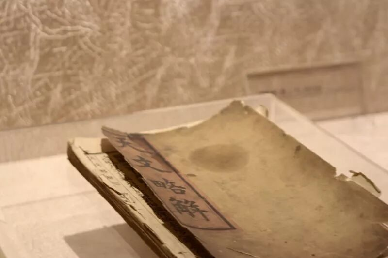
单反有话说
摄影的工作是对实践过程进行记录，最终以图片和视频的形式进行成果展示，是一个团队不可缺少的一部分。对于摄影人员来说，工作还是比较辛苦的，要兼顾参与调研活动和记录团队调研情况。也正如上一期摄影伙伴所说“摄影是集技术和思维的工作”。
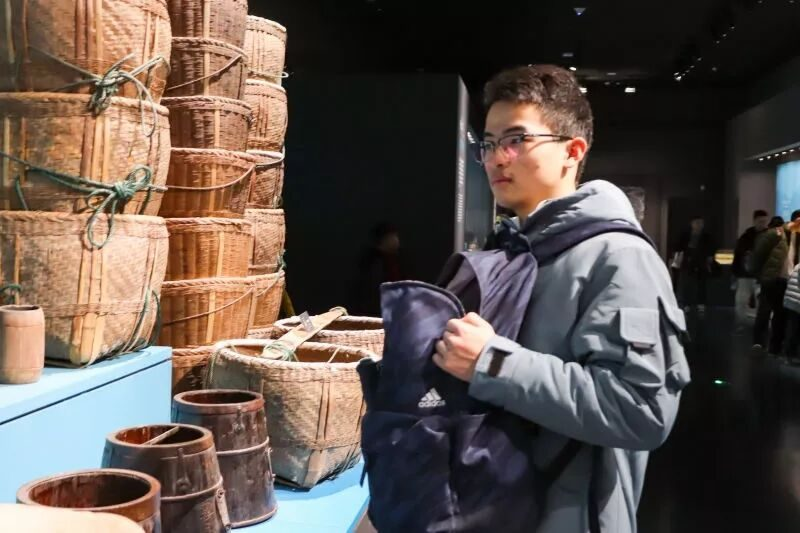
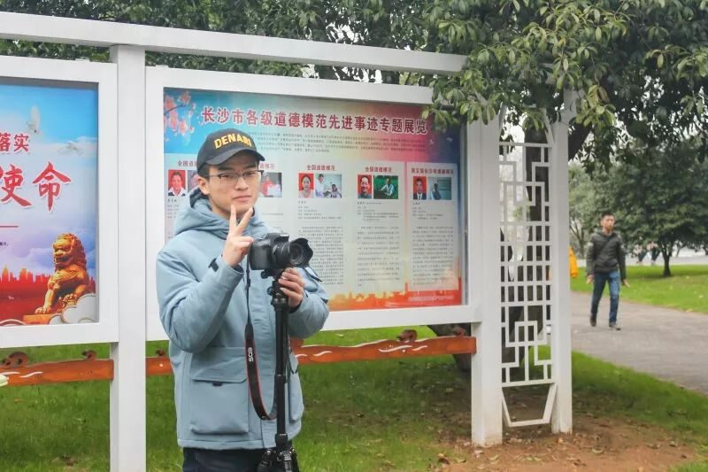
我们是非专业的技术人员，大多数时候都是在记录零散的画面，因此不可避免地会造成遗漏和不妥。说是工具人有些不妥，但是确实做了很多工具人做的事情，为别人拍照，录制视频，仿佛是游离在部分调研活动之外。
我又是幸福的，两次行程我都负责摄影，在摄影的岗位上，是和队员接触机会最多的，一声声快门，记录下了大家最真实的画面，无论是严肃的调研状态，抑或是滑稽的表情包，抑或是合影留念。在后期过程中，一遍又一遍地播放着团队调研的画面，此时此刻被此情此景环绕着。
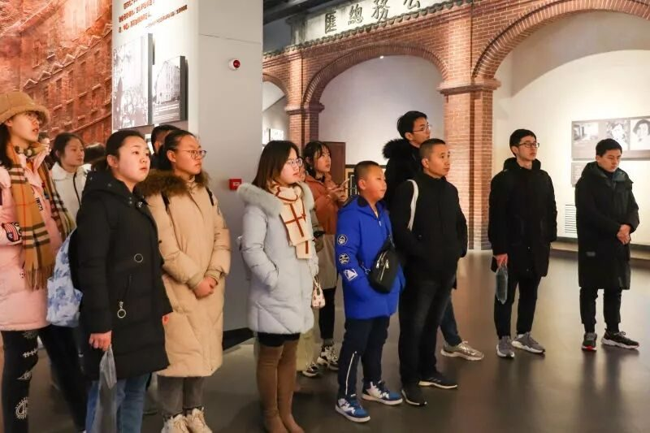
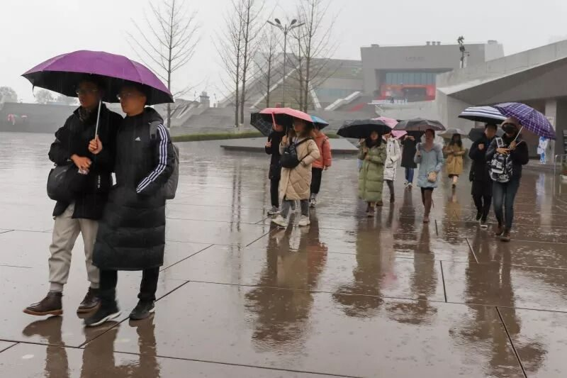
以后不经意间看到了，还是熟悉的声音和画面，都是可爱的人啊，都是最美的模样呐。

寒冬腊月，天空不作美，也下起了雨，真正成了一次文化苦旅。行者们小憩一会儿，收拾行装，继续前行，奔赴更博大的文化世界。
道别长沙，地理有界，行者无疆。
来源 | 行者无疆实践团
文字 | 陈辉
排版 | 张清雅
审核 | 段智然 康艳虎 黄玲
行者无疆实践团
QQ：2758025831

随行者一起认识世界
长按二维码